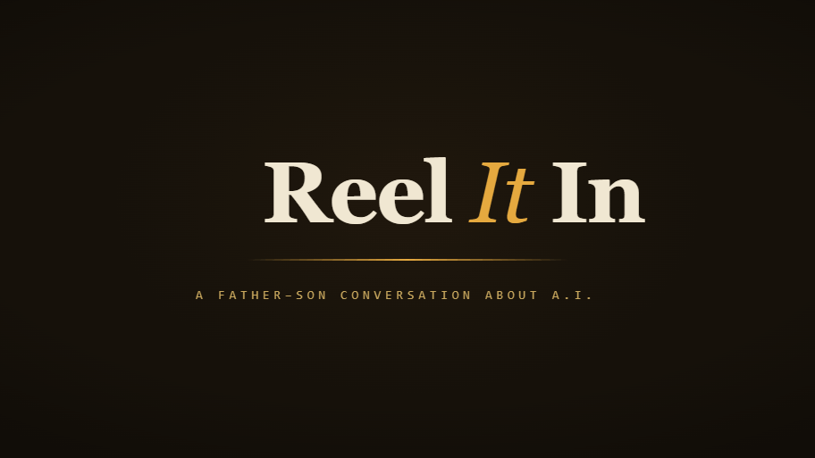
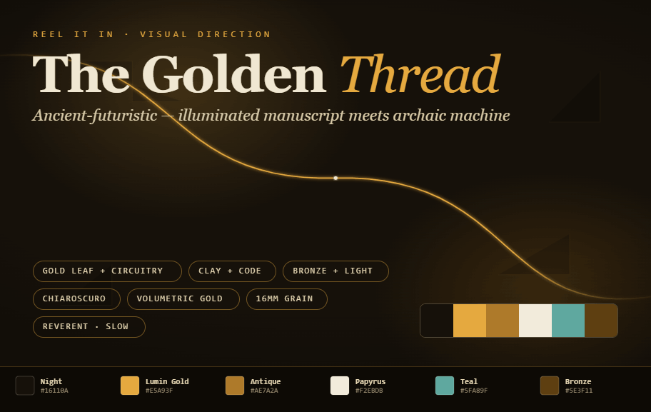

One luminous thread, traced from Creation to the belly of the deep — and reeled in.
A single golden thread is the camera's only constant. It is born at Creation, climbs the Tower of Babel, persists across the Flood, descends into the sea-monster of Jonah — and then pulls taut and reels in, becoming the waterline beneath the show's wordmark. The thread is the fishing line, the film reel, and the line of inheritance all at once — and the name Reel It In lands as its natural resolution: Jonah, drawn up from the deep; the viewer, drawn into the show.
The look is ancient-futuristic, never retro-futuristic: an illuminated manuscript fused with archaic machinery — gold leaf and circuitry, clay and code, bronze and light. Every age of the story already contains techne: the first pattern is the first algorithm; Babel's tongues are a storm of untranslatable data; the leviathan's scales are inscribed circuit-tablets. Reverent, weighty, hand-made-by-the-divine — not glossy sci-fi.
Built for shot-by-shot control. Generate each beat as its own ~8s clip, then trim to ≈3.5–4.5s and cross-dissolve in your editor. Always prepend the Style Bible so the five clips stay visually identical. No on-screen text — the wordmark is added in post.
Ancient-futuristic sacred montage. The aesthetic of an illuminated manuscript fused with archaic technology — gold leaf and circuitry, clay and code, bronze and light. Patinated, archaeological, touched-by-the-divine; NOT glossy sci-fi. Deep chiaroscuro, warm darkness, single shafts of volumetric gold light. Palette: warm near-black, papyrus cream, antique and luminous gold, one accent of verdigris teal. Heavy 16mm film grain, soft halation on highlights, gentle gate weave. A single unbroken luminous golden thread runs through the frame as the connective motif. Cinematic, reverent, slow and deliberate camera. 16:9, shallow depth of field, no on-screen text.
[STYLE BIBLE] In total darkness a single point of gold light ignites; a luminous golden thread unspools outward into the void. As it travels it fractures the dark into a fine geometric lattice — the first pattern, a proto-circuit, the first algorithm — while primordial waters separate below, mirror-black and glinting. Gold dust drifts like forming stars. Slow push-in toward the igniting spark. Genesis: the dawn of order out of the deep.
[STYLE BIBLE] The golden thread climbs, weaving a great ziggurat under construction — at once an ancient stepped temple, a stack of glowing inscribed clay tablets, and a tower of luminous server-racks and neural lattice reaching into a dark sky. Countless faint glyphs from many scripts swirl around it like embers — the confusion of tongues as a storm of untranslatable data. Hands of light set each course. Slow tilt up the tower; near the summit it shudders and fractures, glyphs scattering into the dark. Hubris and fragmentation.
[STYLE BIBLE] The fracturing tower dissolves into a deluge: a vast sea of liquid gold-black light floods the world, ancient and endless. The single golden thread survives, drawn taut as a line across the surface of the black water and trailing to the horizon. A small vessel of warm light — an ark — drifts far off. Fine gold rain. Slow aerial drift low over the water, following the taut thread. Judgment and cleansing; one line of continuity across the chaos.
[STYLE BIBLE] Beneath the black water an immense sea leviathan rises — patinated bronze plating with inner light, mechanical-organic, its scales like inscribed circuit-tablets, eyes of molten gold. The golden thread leads down into its depths where a small human figure is held. Suddenly the thread snaps taut and begins to reel, drawing the figure upward through shafts of light toward the surface. Slow upward camera following the reeling thread. The descent into the deep — and the catch.
[STYLE BIBLE] The taut golden thread breaks the surface and snaps perfectly horizontal, becoming a single luminous gold waterline across a warm-black frame. The water stills to glass. Wide calm negative space above the line for a title to appear. Held nearly still, only grain and a faint shimmer moving. Quiet, resolved, expectant.
[STYLE BIBLE] One continuous reverent traveling shot following a single luminous golden thread through deep warm-black space: it ignites from a spark amid separating black waters (Creation), climbs a fracturing ziggurat of glowing clay tablets and neural server-lattice swirling with many-scripted glyphs (Babel), survives drawn taut across a flooded sea of gold-black light (the Flood), descends to a vast bronze-and-light leviathan whose scales are inscribed circuit-tablets and reels a small figure up from its depths (Jonah), then snaps horizontal into a calm gold waterline with still negative space above. Slow, deliberate, cinematic. Heavy film grain, volumetric gold light, ancient-futuristic.
on-screen text, lettering, captions, logos, watermark, modern clothing, contemporary city, glossy plastic sci-fi, neon cyberpunk, chrome, cartoon, anime, fast cuts, stock lens flares, oversaturated rainbow colors, busy clutter, low-contrast flat lighting
A solo cello is the golden thread — one searching line that persists throughout. Two versions: a descriptive prompt for the music-gen tool, and a second-by-second cue map if you want the hits locked to picture.
An ancient-futuristic sacred score for a ~20-second cinematic title montage. A solo cello is the through-line: one warm, searching melodic phrase that recurs and grows. Open in near-silence — a low sustained drone of cello and soft choral pad under a slow frame-drum heartbeat. Build through three swelling waves as the music ascends, layering bowed strings, a distant wordless choir, and metallic mechanical textures — struck bronze, prepared piano, soft glitching ticks — fusing the ancient and the technological. Reach a full, weighty crescendo, then cut hard to a held silence. Out of the silence: a single firm mechanical "reel" sound and a low cello pizzicato — the catch — then the solo cello resolves to a warm sustained note that blooms and fades to nothing. Reverent, mysterious, hopeful, weighty. Tempo ~60 BPM, rubato. Orchestral and organic, film-scored. No drum kit, no EDM, no synth bass drops, no sung words.
0.0s Cello enters — low single sustained note, near-silence, frame-drum heartbeat begins [CREATION / build] 4.0s Second wave — bowed strings + distant choir join, the line steps upward [BABEL / build] 8.0s Third wave — metallic bronze + prepared-piano textures, tension rising [FLOOD / build] 11.0s Full crescendo — weighty peak as the leviathan rises [JONAH / peak] 12.5s HARD CUT to silence — ~0.5s of nothing [SILENCE] 13.0s Single mechanical "reel" + low cello pizzicato — the catch, the thread pulls taut [HIT] 14.0s Solo cello resolves to a warm sustained note; choir pad blooms beneath [RESOLVE] 17.0s Note blooms under the wordmark and fades to silence [OUT]
Lock these so whatever the tools generate cuts cleanly against the rest of the show.

